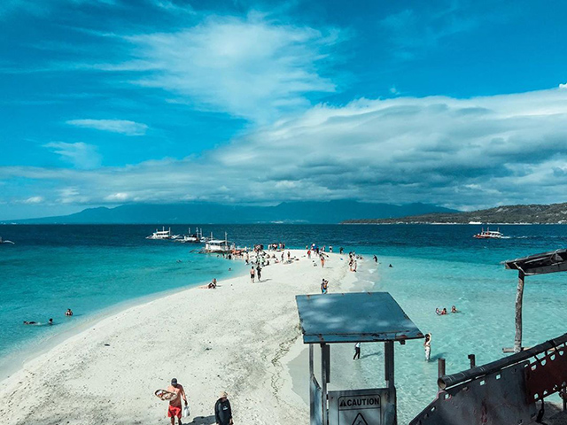
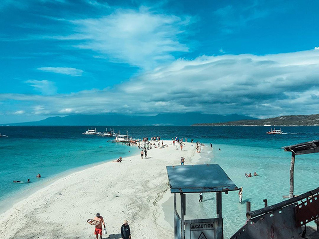

Explore Bais City: A Haven for Dolphin & Whale Watching
Bais City, located in the heart of the Philippines, is renowned for its stunning natural beauty, offering one of the best dolphin and whale watching experiences in the country. The crystal-clear waters of the Tañon Strait provide the perfect backdrop for your next unforgettable adventure.
Dolphin & Whale Watching
Dive into the exciting world of marine life with our guided dolphin and whale watching tours. Whether you're a nature enthusiast or a family looking for a thrilling adventure, Bais City is home to playful dolphins, gentle whales, and rich marine biodiversity. Our experienced guides will ensure a safe and memorable experience as you spot these majestic creatures in their natural habitat.

Manjuyod Sandbar: A Paradise Getaway
Just a short boat ride from the city, the Manjuyod Sandbar offers pristine white sands and clear turquoise waters, ideal for a relaxing day under the sun. This beautiful sandbar is often referred to as the "Maldives of the Philippines" because of its unmatched beauty. Whether you want to sunbathe, swim, or indulge in water sports, Manjuyod promises an unforgettable experience.
 


Other Must-See Attractions
Beyond dolphin and whale watching, Bais City is also home to a variety of natural wonders and cultural sites that are sure to captivate every traveler. Visit the serene Magsico Falls, explore the lush forests surrounding the area, or enjoy a visit to the local cultural centers. Bais City offers a unique blend of adventure and relaxation for all kinds of travelers.

Our Exclusive Tours & Services
At Bais City Dolphin & Whale Watching, we offer custom tour packages that cater to every interest. From private dolphin-watching tours to day trips to the Manjuyod Sandbar, we ensure that your experience is tailored to your needs. Our professional tour guides are passionate about showcasing the best of Bais City, making every moment truly special.
- 🟡 Private Dolphin Watching Tours
- 🟡 Group Tours to Manjuyod Sandbar
- 🟡 Guided Snorkeling and Scuba Diving Trips
- 🟡 Cultural and Heritage Tours
- 🟡 Transport and Boat Rentals